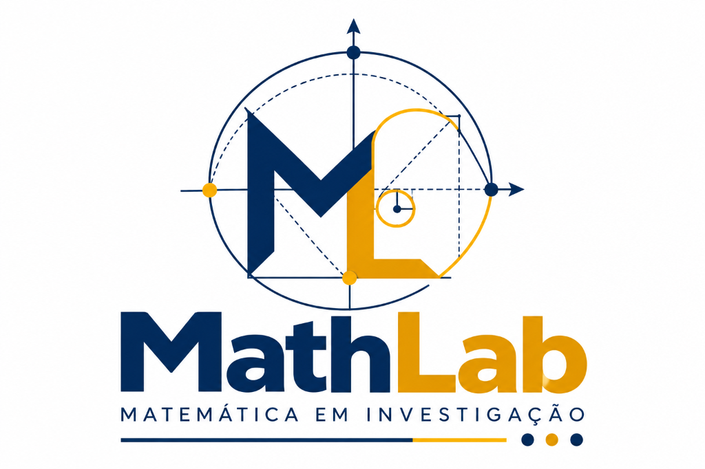

Selo MathLab
Acessibilidade DUA • Recomposição de Aprendizagens (Saeb 5º Ano & BNCC)
🏠 Portal MathLab
🔊 Ler Missão
A−
A+
◐ Alto Contraste
👁️ Modo Daltonismo
👩🏫 Tags Saeb/Prof.
📊 De Olho no Saeb

São Paulo em Ação: Matemática 1 — 16 Missões
Mentor Guia:
Prof. Alê Chocolate
• Anos Finais (6º Ano) • 32 Semanas / 4 Bimestres
Pontuação Cooperativa
0 XP
Missões Concluídas
0 / 16
🧮 Andaimes & Rascunho
👩🏫 Painel do Professor — Modo De Olho no Saeb (Recomposição 6º Ano)
Fechar ×